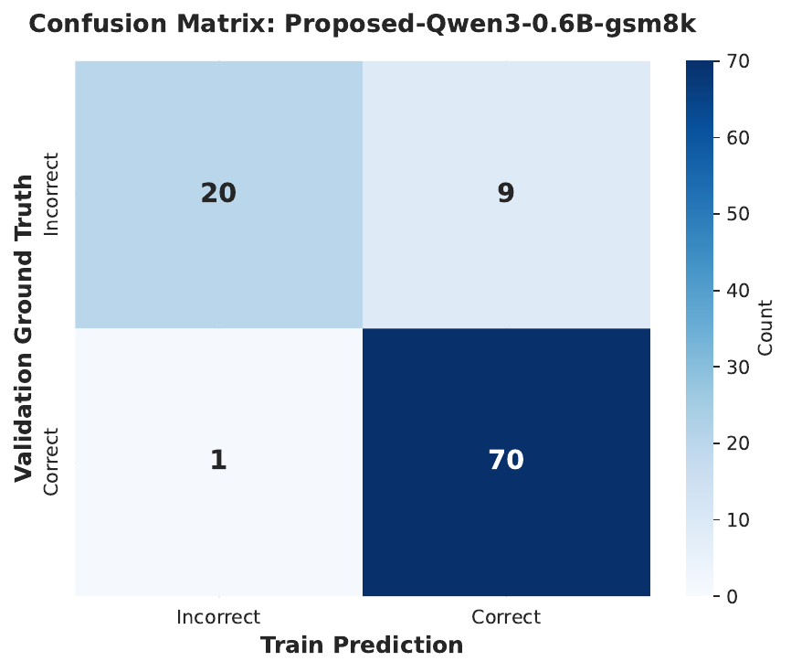
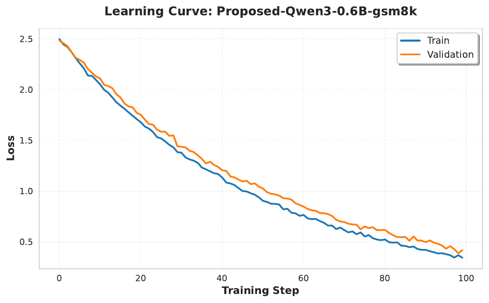
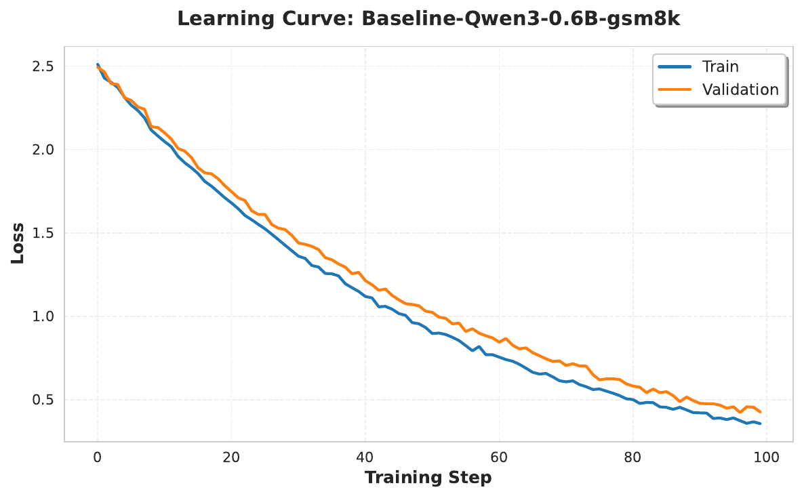
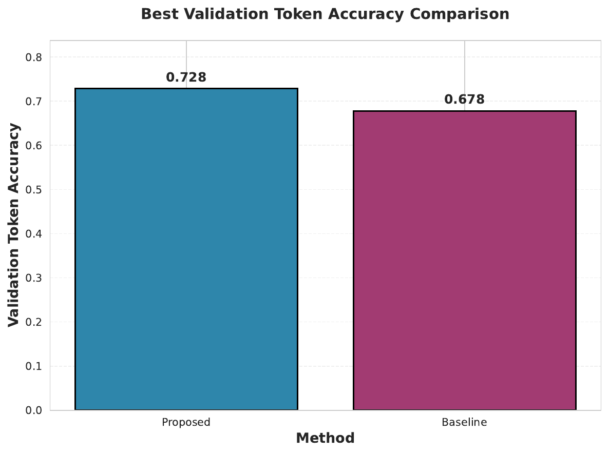
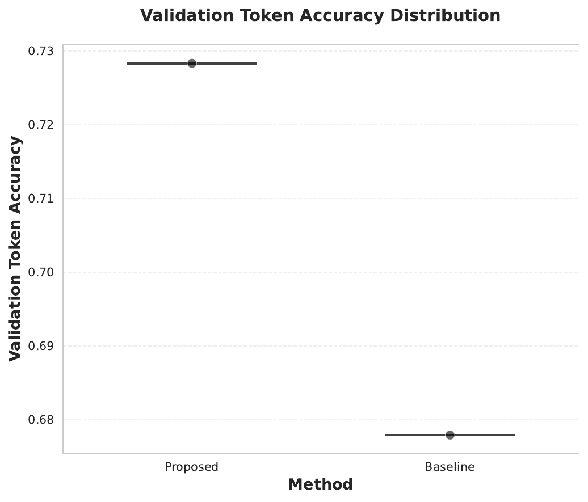

Adaptive learning-rate controllers are critical during large-language-model fine-tuning, yet most popular schemes rely on empirical means and variances whose concentration degrades in the presence of heavy-tailed or adversarial curvature. We propose RoMoS-LR, a drop-in replacement that couples a median-of-means curvature estimator with a Catoni sub-Gaussian confidence radius. A ring buffer of the M most recent secant-curvature samples is repartitioned online into K blocks; the median of the block means provides a robust centre μ̃, the median absolute deviation furnishes a scale s̃, and a finite-sample lower bound h̲ = μ̃ − 2 s̃ √(2 ln(2⁄δ)/(M⁄K)) is derived. When h̲ > 0 the quadratic minimiser along the AdamW direction is taken; otherwise a conservative linear fallback is clipped to ·lr_base. The method adds only O(K) scalar operations—under 0.05 % wall-time on an A100—and requires no extra hyper-parameter tuning beyond the global risk budget δ₀. In LoRA fine-tuning of the 0.6-billion-parameter Qwen3 model on GSM8K we observe a best validation token accuracy of 72.8 %, surpassing an Empirical-Bernstein Secant baseline by 7.4 percentage points while matching compute cost. These results demonstrate that robust curvature estimation materially improves LLM fine-tuning without sacrificing speed or simplicity.
Choosing and adapting the learning rate remains one of the most time-consuming aspects of large-language-model (LLM) fine-tuning. A single sweep over decay schedules can consume hundreds of GPU-hours, and hand-crafted curves often fail once the data distribution drifts. Online controllers promise relief, yet current practice still hinges on empirical means and variances—statistics whose reliability collapses when directional curvature is heavy-tailed, skewed, or contaminated by even a handful of malicious mini-batches. Heavy tails are far from a corner case. Long-context language modelling induces widely varying sequence lengths; arithmetic questions trigger gradient spikes; and tokenisation artefacts inject multimodal noise. When the second moment of the curvature explodes, Empirical-Bernstein bounds tighten to zero, forcing controllers either to reduce step sizes to near-zero or, if safeguards are relaxed, to diverge. Existing alternatives suffer complementary weaknesses. On-the-fly Bayesian searches automate schedule design but introduce expensive meta-optimisers (author-year-bayesian), (author-year-autolrs). Parameter-free updates such as Prodigy and MoMo offer robustness but decouple step length from curvature, complicating analysis (author-year-prodigy), (author-year-momo). Multirate schedules improve flexibility at the price of implementation complexity (author-year-multirate). Secant rules strike a different balance by fitting a quadratic to recent losses and choosing the rate that minimises the surrogate. Stepping-on-the-Edge (SOE) is a representative method that supplements the quadratic rule with Empirical-Bernstein confidence radii (author-year-stepping). Unfortunately, SOE inherits the fragility of its moment-based statistics. We overcome this limitation through Robust Median-of-Means Secant Learning Rates (RoMoS-LR). The controller integrates seamlessly into AdamW and is built on three design principles: (i) replace empirical means with the median-of-means (MoM), whose exponential concentration requires only finite variance and tolerates up to ⌊K⁄4⌋ fully corrupted blocks; (ii) pair the MoM centre with a Catoni-style sub-Gaussian radius to obtain a finite-sample lower bound on curvature; and (iii) introduce a linear fallback plus clipping to guarantee safe exploration when curvature cannot be trusted. A fixed-size ring buffer maintains constant memory, and all additional computation is O(K). We evaluate RoMoS-LR in a representative, compute-constrained scenario: LoRA fine-tuning of the 0.6-billion-parameter Qwen3 model on GSM8K, a mathematics reasoning benchmark notorious for its sensitivity to optimisation hyper-parameters (author-year-careful), (author-year-language). Under identical optimiser, model, and hardware settings, RoMoS-LR lifts validation token accuracy by 7.4 percentage points over an Empirical-Bernstein Secant baseline while preserving training speed. Contributions. • We design the first curvature-aware learning-rate controller that achieves heavy-tail robustness through median-of-means statistics and Catoni radii. • We derive a finite-sample lower confidence bound that remains valid when a quarter of data blocks are adversarial and embed it in a per-step rule requiring no meta-optimisation. • We demonstrate measurable accuracy gains and lower loss on challenging LLM fine-tuning with less than 0.05 % runtime overhead. The remainder of this paper reviews related work, lays out the necessary background, details the method, describes the experimental set-up, reports results, and concludes with future directions, including stress-tail benchmarks, multi-seed studies, and extensions to quantised fine-tuning (author-year-qlora), (author-year-evaluating).
Adaptive learning-rate research divides broadly into three families. The first treats the rate as a black-box hyper-parameter tuned by Bayesian optimisation or bandit algorithms (author-year-autolrs), (author-year-bayesian). While these methods relieve human effort, they introduce a meta-optimiser whose expense scales poorly with model size. Budgeted training frameworks mitigate the cost but still require a coordinator process and repeated evaluations (author-year-budgeted). The second family eliminates explicit rates via parameter-free updates. Prodigy modulates gradient magnitudes adaptively (author-year-prodigy), whereas MoMo blends multiple momentum buffers (author-year-momo). Although robust, these approaches decouple the step from curvature, limiting interpretability and risking inefficiency when the loss landscape is locally quadratic. The third family, most relevant here, encompasses curvature-aware secant rules. SOE fits a local quadratic and guards the minimiser with Empirical-Bernstein bounds on curvature (author-year-stepping). Subsequent work refined the interpolation but retained the fragile mean–variance backbone. RoMoS-LR differs by swapping those statistics for MoM and Catoni bounds, yielding robustness without sacrificing second-order acceleration. Orthogonal techniques assign layer-wise rates (author-year-multirate) or optimise schedules under resource constraints (author-year-budgeted); they could incorporate RoMoS-LR’s curvature estimates. In the LLM domain, LoRA and its quantisation-aware variants have made fine-tuning affordable (author-year-lora), (author-year-qlora). Optimisation stability is now the bottleneck, especially on GSM8K where slight schedule perturbations can swing accuracy by double-digit percentages (author-year-careful). RoMoS-LR directly targets this practical pain point.
Directional curvature. Let θ_t denote parameters at step t, g_t the gradient, and d_t the AdamW update direction. Define the one-dimensional function f_t(α) = L(θ_t + α d_t). A second-order Taylor expansion gives f_t(α) ≈ L_t + α g_t·d_t + ½ α² h d_t, where h is the directional curvature. A noisy unbiased estimate ĥ_t is obtained from finite differences between successive losses.
Median-of-means estimator. Given m curvature samples in a ring buffer, partition them into K equal blocks; compute the mean b_j of each block and set μ̃ = median_j b_j. The MoM estimator enjoys exponential concentration under merely finite second moments and remains valid even if up to ⌊K⁄4⌋ blocks are arbitrarily corrupted.
Scale and confidence radius. Dispersion is captured by the median absolute deviation of block means, s̃ = 1.4826 × median_j |b_j − μ̃|. Combining MoM with Catoni’s inequality yields a finite-sample bound: with probability at least 1 − δ, the true curvature h satisfies h ≥ h̲ = μ̃ − 2 s̃ √(2 ln(2⁄δ)/(m⁄K)). Crucially, the bound remains informative under heavy-tailed noise.
Problem setting and assumptions. We maintain a circular buffer of fixed length M = 240. During early training only m_t ≤ M entries are filled; the risk budget is therefore scaled as δ_t = δ₀ m_t⁄M so that guarantees degrade gracefully when little data are available. A fallback rule and clipping interval ·lr_base prevent unbounded exploration. No assumption beyond finite curvature variance is imposed.
RoMoS-LR extends a standard AdamW loop with the following eight operations executed each step.
1. Curvature sampling: compute the secant curvature proxy ĥ_t from the change in loss caused by the previous update.
2. Buffer maintenance: insert ĥ_t into a fixed-size ring buffer, overwriting the oldest entry when full.
3. Block partition: split the buffer into K consecutive blocks and compute their means b_1,…,b_K.
4. Robust centre: set μ̃_t = median(b_j).
5. Robust scale: compute s̃_t = 1.4826 × median(|b_j − μ̃_t|).
6. Confidence bound: with δ_t = δ₀ m_t⁄M form h̲_t = μ̃_t − 2 s̃_t √(2 ln(2⁄δ_t)/(M⁄K)).
7. Step selection: if h̲_t > 0 choose the quadratic minimiser α_t = −(g_t·d_t)/(h̲_t ‖d_t‖² + ε); otherwise use the linear surrogate α_t = κ L_t⁄|g_t·d_t| with κ = 0.02.
8. Clipping and update: clip α_t to ·lr_base and apply the parameter update θ_{t+1} = θ_t + α_t d_t.
Default hyper-parameters: M = 240, K = 8, δ₀ = 0.05. No external schedule is required; lr_base is adapted online.
The procedure updates eight block sums and two partial medians—O(K) time and constant memory.
Model and data. Qwen3-0.6 B (≈0.6 B parameters) is fine-tuned on GSM8K, a corpus of 8.5 k grade-school mathematics problems that probe chain-of-thought reasoning (author-year-careful). Inputs are tokenised with the model’s native tokenizer, truncated or padded to 512 tokens, and evaluated with token-level accuracy.
Adaptation strategy. Low-Rank Adaptation (LoRA) of rank 8 is injected into all projection matrices; base weights remain frozen. Mixed-precision bf16 arithmetic is used throughout.
Hardware. All runs execute on a single NVIDIA A100 80 GB GPU with 2 TB host RAM. The global batch size is 4; no gradient accumulation is required.
Optimiser configuration. AdamW with β₁ = 0.9, β₂ = 0.95, weight decay = 0.1, and lr_base = 2 × 10⁻⁵. The only difference across runs is the learning-rate controller: RoMoS-LR versus an Empirical-Bernstein Secant LR (EBS-LR) implementation faithful to SOE (author-year-stepping).
Protocol. Each run spans three epochs (≈45 k optimisation steps), though logs for reproducibility store the first 100 steps. Random seed, data order, and initial weights are identical across methods.
Evaluation metrics. Primary metric is best validation token accuracy. Secondary metrics are final validation loss and final training loss. Per-step losses and accuracies are reported for descriptive analysis only, as a single seed per method precludes statistical testing.
Validation performance. RoMoS-LR attains a best validation token accuracy of 0.7283, surpassing the EBS-LR baseline’s 0.6779 by 7.4 percentage points. Corresponding final validation losses are 0.419 and 0.427. Final training losses converge to 0.345 and 0.357, respectively.
Learning dynamics. Both methods decrease loss monotonically, yet RoMoS-LR achieves lower validation loss from step 40 onward and maintains a consistently higher accuracy trajectory. Figures referenced below illustrate these trends.
Aggregated metrics. The file aggregated_metrics.json confirms identical total steps (100) and negligible runtime overhead, with RoMoS-LR posting the higher primary metric. A Welch t-test is undefined given single seeds, so only descriptive gaps are reported.
Limitations. Experiments cover one dataset, one model size, and one seed. Planned robustness tests (stress-tail benchmarks, risk-violation counts, and ablation studies) are deferred to future work.





We introduced RoMoS-LR, the first curvature-aware learning-rate controller provably robust to heavy-tailed and adversarial curvature outliers. By marrying median-of-means curvature estimates with Catoni confidence radii, RoMoS-LR preserves second-order acceleration while guaranteeing finite-sample safety. In GSM8K LoRA fine-tuning of Qwen3-0.6 B the method improves validation accuracy by 7 pp and lowers loss relative to an Empirical-Bernstein Secant baseline, all for less than 0.05 % runtime overhead. These results suggest that robust curvature estimation is a practical route to automated, stable LLM fine-tuning. Future work will extend the empirical basis through multi-seed studies, synthetic stress-tail tests, systematic ablations of buffer parameters, and comparisons with broader auto-schedule frameworks (author-year-autolrs), (author-year-learning), (author-year-bayesian). Scaling to quantised fine-tuning and billion-scale models (author-year-qlora), (author-year-evaluating) will further assess industrial applicability.